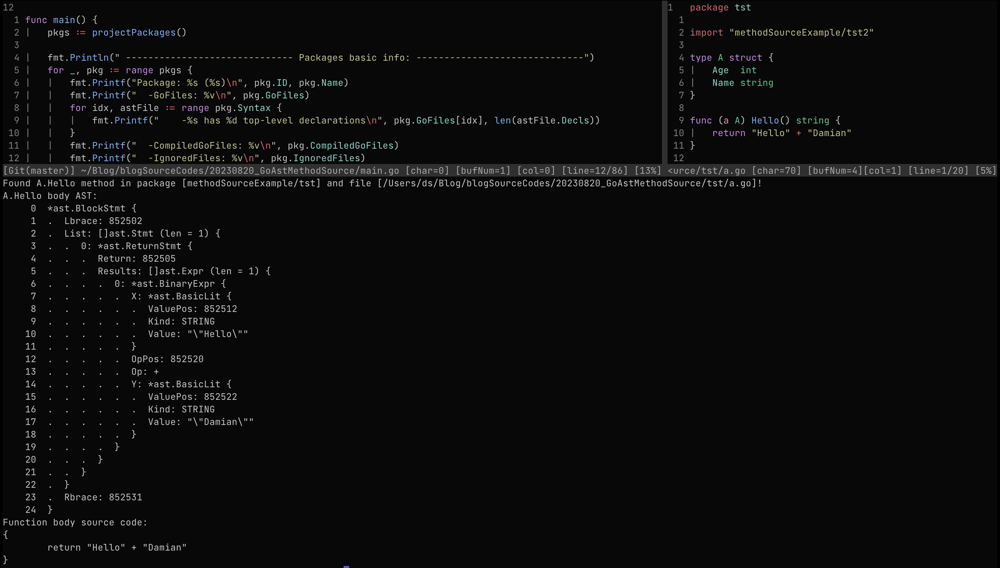

Getting mathod's source code in Go

Intro
Recently I thought I want to have a function, implemented in Go, which would return method’s source code for given type and method name in the runtime. Something of this signature:
func MethodBodySource(typeName, methodName string) (*ast.BlockStmt, string, error) {
...
}
This function would return found function body AST (which in Go is block statement), it’s source code as string and possibly an error.
In dynamically typed and interpreted languages this is a foundation functionality. For example, in Python, it’s enough to do the following:
import inspect
def func_source(f) -> str:
return inspect.getsource(f)
In compiled languages this looks usually a bit more complicated and involves some kind of metaprogramming. I want to have this function to detect whenever specific kind of methods in my project has been changed, to denote it in the database (external persistent place for data really). I thought I would get the answer to my problem in an hour at most using Stackoverflow, ChatGPT and Google. I was wrong. It took me a bit more. In the end the answer is not really complicated but getting there took me few moments. Thus I thought it might be a good idea to summarize it in a blog post.
On metaprogramming in Go there are several kinds available. Code generation via go generate, reflective
programming via standard reflect package and manipulation of
Go abstract syntax tree (AST) using go/token, go/scanner, go/parser and go/ast standard packages. For my
problem reflection and getting use of the AST sounds like perfect match. Usually I don’t need to reach for
metaprogramming, so in case of this problem I thought it’s a good occasion to explore those a bit deeper.
High level approach
High level plan for implementing this function is really simple.
- Get AST or set of ASTs for the project source code
- Implement AST traversal for finding the right method (
*ast.FuncDecl) - Return
*ast.FuncDecl.Body(*ast.BlockStmt) and its serialization to a string
Parsing AST of the project
Initially I thought I could simply use go/parser package to easily parse the whole Go project and I would get a
single big AST to work on. It turned out this package only supports parser.ParseFile
and parser.ParseDir functionalities for parsing single file or single
directory of files. At this point I thought I don’t really know how Go exactly do the compilation.
As I learned ASTs are parsed for every Go file separately and basic unit is a Go package. That makes sense, because for
example methods for a single type might be scattered across many files within the package. But still on the package
level Go keeps a list of *ast.File ASTs rather then combining them into a single tree. Then type checking is also done
upon slice of ASTs.
Instead of manually parsing all *.go files I thought, perhaps, I could use already existing functionality which is
used by the compiler itself. I found golang.org/x/tools/go/packages
package. As documentation states Package packages loads Go packages for inspection and analysis. In particular it
contains packages.Load function which loads packages
according to given configuration and returns slice of pointers to Package:
type Package struct {
ID string
PkgPath string
Errors []Error
TypeErrors []types.Error
GoFiles []string
...
Types *types.Package
Fset *token.FileSet
Syntax []*ast.File
...
}
As we can see it contains Syntax field which is a slice of ASTs of all *.go files in the package. To load all
packages in the current Go module (project) we can use a function similar to the following:
func projectPackages() []*packages.Package {
cfg := &packages.Config{
Mode: packages.NeedFiles | packages.NeedSyntax | packages.NeedTypes,
Tests: false,
}
pkgs, err := packages.Load(cfg, "./...")
if err != nil {
log.Panic(err)
}
return pkgs
}
The crucial configuration in here is adding packages.NeedSyntax to the Mode. Otherwise ASTs will not be parsed. Ok,
so at this point we have a slice of ASTs for our project. There are few minor caveats, but we’ll come back to it a bit
later. Using ast.Print function we can print a AST in a pretty format:

Just for an illustrative example, if you would like to print ASTs for all parsed files, you can do something like that:
pkgs := projectPackages()
for _, pkg := range pkgs {
for idx, astFile := range pkg.Syntax {
fmt.Printf("Pkg: %s | File: %s\n", pkg, pkg.GoFiles[idx])
ast.Print(nil, astFile)
}
}
Finding the right method in the AST
Once we have AST, finding the right sub-tree for given method and type name is rather straightforward. Especially in case when we can just implement few examples and print its ASTs, to get familiar with types used in Go AST. Possible implementation can look like the following:
func findMethodInAST(astFile *ast.File, typeName, methodName string) *ast.FuncDecl {
for _, decl := range astFile.Decls {
funcDecl, isFunc := decl.(*ast.FuncDecl)
if !isFunc {
continue
}
if funcDecl.Recv == nil || len(funcDecl.Recv.List) != 1 || funcDecl.Name.Name != methodName {
continue
}
ident, isIdent := funcDecl.Recv.List[0].Type.(*ast.Ident)
if isIdent && ident.Name == typeName {
return funcDecl
}
// Check for *T receivers
starExpr, isStar := funcDecl.Recv.List[0].Type.(*ast.StarExpr)
if isStar {
ident, isIdent := starExpr.X.(*ast.Ident)
if isIdent && ident.Name == typeName {
return funcDecl
}
}
}
return nil
}
A bit of explanations
- Iterate over all declarations in AST (
*ast.File) - Check whenever this declaration is a function declaration, if not continue to the next one
- Check whenever this function has appropriate name and declaration has a receiver, to make sure it’s a method and not free function
- At this point we have two cases. Method can be defined on type
Tor pointer*T - In the first case we check if receiver type is an identifier (
*ast.Ident) and then check it’s name - In the other case we check for
*ast.StarExprand then take identifier from*ast.StarExpr.X - If any of those two cases type name matches given type name, we know we found the right sub-tree and can return
*ast.FuncDecl
Overall, in my problem, we can assume that whole Go project was successfully compiled. In particular we can assume that within single package pairs of types and methods and unique, thus we can return the first matching method in the AST is the only one.
AST to string serialization
As we would expect for AST serialization there is already implemented function in the standard library -
printer.Fprint from go/printer standard package:
func Fprint(output io.Writer, fset *token.FileSet, node any) error
Argument node is any node of the AST. As we can see this function requires *token.FileSet which is an object that
keeps a slice of source files (*token.File). That’s basically because printer.Fprint does not serialize AST just
based on its content but rather uses token positions from AST to read it from *token.FileSet. I’m guessing it’s
mainly because to have mapping of AST nodes to concert file in the file system and lines in that file. Those are in
particular included in stack traces.
In case of parsing ASTs using mentioned packages.Load function there is single *token.FileSet per package which is
stored in packages.Package.Fset field. Knowing that we can go ahead and serialize AST of body of our target method
back into a string.
pkgs := projectPackages()
for _, pkg := range pkgs {
for idx, astFile := range pkg.Syntax {
helloMethod := findMethodInAST(astFile, "A", "Hello")
if helloMethod != nil {
var buf bytes.Buffer
printer.Fprint(&buf, pkg.Fset, helloMethod.Body)
fmt.Println(buf.String())
}
}
}
By default printer.Fprint prints tabs with width of 8 spaces. If you want to change it, you can do it like this
printerCfg := printer.Config{Tabwidth: 4, Mode: printer.UseSpaces}
printerCfg.Fprint(&buf, pkg.Fset, helloMethod.Body)
Is it done?
It sounds like we implemented our sketched high level plan and in fact parsed all Go files in the project, found the right method in the AST using reflection and finally serialize it to a string. If you want to easily run the full example, you can pull it from here.
It was a good start, but as I mentioned earlier there is one downside of using packages.Load. That is it only uses
actual file system to load go files. It’s configured by
packages.Config.Dir field. Additionally we can pass
patterns for Go file names matches in packages.Load function, but both settings are referring to files in the file
system. That means if I wanted to deploy my program which uses this functionally in the Docker container or remote
server I would need to also include project’s source files. I don’t like it at all! I’d say it’s not acceptable for me.
Especially in Go where we end up with single statically linked binary. It was a good exercise to fool around with ASTs
and reflection, but can we improve the situation?
I think we have two possibilities. One is to either fork and modify packages package and try to extend it to also
accepts abstract file systems (like embed.FS) or to try starting a discussion on adding this functionality to the
package and then starting working on the PR. The second approach would be to abandon packages package and implement
simpler version - we just need to parse ASTs, based on embedded Go files in the binary. Considering amount of work of
the first approach and my specialized use case I decided to go with the latter.
Embed Go files in the binary
In Go 1.16 package embed was added to Go standard library. It enables embedding files into program target binary. Using this embedding all wanted go files from the project into the binary is as easy as this
//go:embed *.go tst/*.go tst2/*.go
var goSourceFiles embed.FS
There is no support for ./... in go:embed. But that’s not really a problem, because we know even before compilation
which catalogs from the project we want to include in the target binary, so we can list them manually. That was the
easy part. A bit more challenging would be adjusting packages package to use in-memory file system. Fortunately for
my problem we don’t really need it. Mentioned package does much more then just parsing package’s file ASTs. It also
perform type checks, let you choose which information about the package and files you want to load and much more. In my
case perhaps, it’s enough to embed source files and use standard go/ast, go/token and go/parser packages? I think
so. I won’t put whole implementation of this approach in here, but just an example how to mimic packages.Load
function regarding parsing ASTs for given packages based on embedded goSourceFiles and tst package.
type PackageSimple struct {
Fset *token.FileSet
FileToASTs map[string]*ast.File
}
func tstPackageEmbedded() (PackageSimple, error) {
fset := token.NewFileSet()
fileASTs := make(map[string]*ast.File)
entries, _ := goSourceFiles.ReadDir("tst")
for _, entry := range entries {
fullName := "tst/" + entry.Name()
data, _ := goSourceFiles.ReadFile(fullName)
astFile, err := parser.ParseFile(fset, entry.Name(), data, parser.AllErrors | parser.ParseComments)
if err != nil {
return {}, err
}
if astFile != nil {
fileASTs[fullName] = astFile
}
}
return PackageSimple{Fset: fset, FileToASTs: fileASTs}, nil
}
Summary
This exercise turned out to be even more fun than I expected! I learned about initial Go compilation phases (lexing, parsing, type checking), a bit more about reflection and got deeper insights on Go AST. I’m glad that I solved my problem of getting method’s source code in the runtime. I think that this hands-on experience with Go AST might become handy in the future.